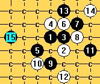
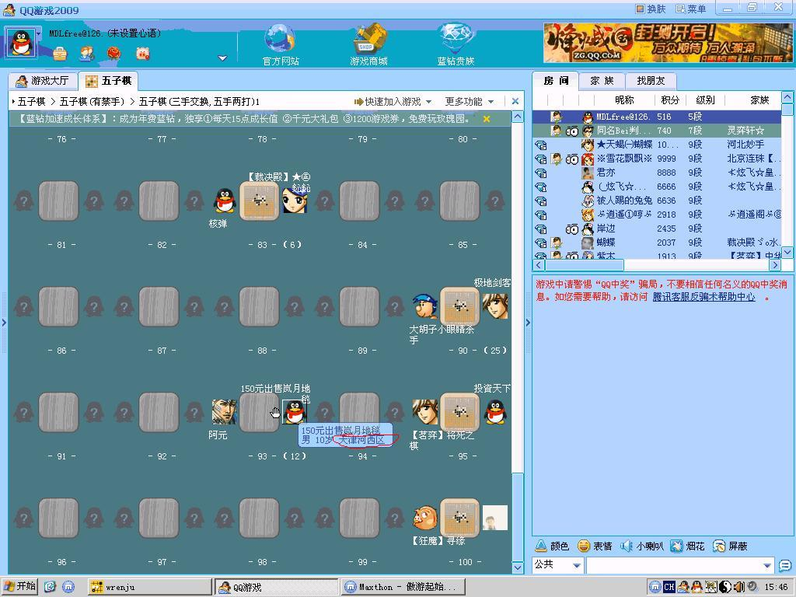
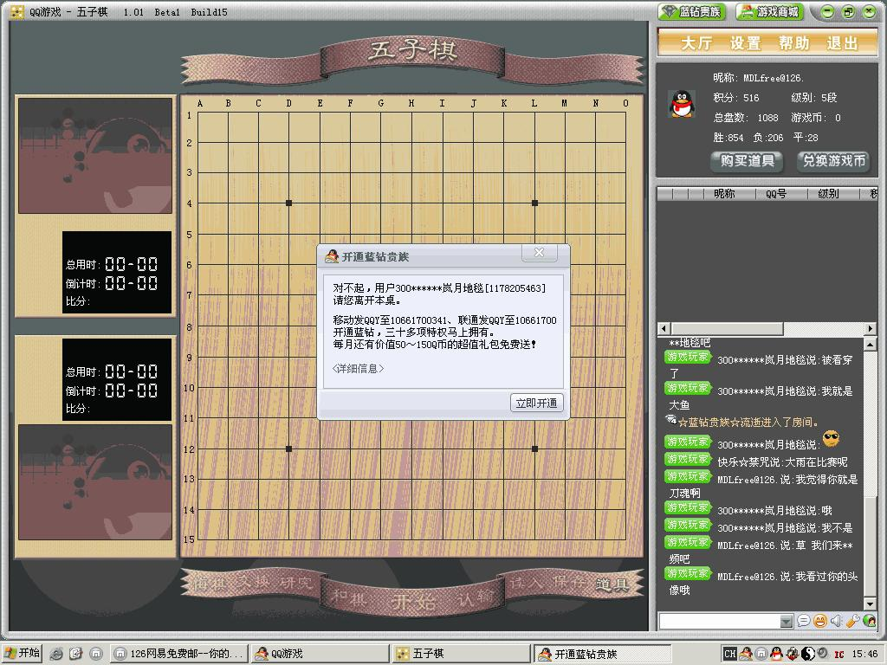

关于岚月目前未解决的还有哪些?
首页
定式及研究
#1 关于岚月目前未解决的还有哪些? 作者：战龙在野 发表时间：2008-3-30 10:00:35
请教各位大侠,岚月还有哪些局面未解决?我对这个不大理解..
#2 Re:关于岚月目前未解决的还有哪些? 作者：战龙在野 发表时间：2008-3-30 10:03:47
比如这个?
#3 Re:关于岚月目前未解决的还有哪些? 作者：战龙在野 发表时间：2008-3-30 10:32:19
这个是唯一变化么?
#4 Re:关于岚月目前未解决的还有哪些? 作者：战龙在野 发表时间：2008-3-30 10:40:49
这个变化应该能胜吧?其他还有吗?
#5 Re:关于岚月目前未解决的还有哪些? 作者：lfzxdh 发表时间：2008-3-30 12:02:03
 巨强人~~~这问题太难了，等待大虾前来解答~
巨强人~~~这问题太难了，等待大虾前来解答~
#6 Re:关于岚月目前未解决的还有哪些? 作者：虚无 发表时间：2008-4-1 9:50:07
难得
#7 Re:关于岚月目前未解决的还有哪些? 作者：战龙在野 发表时间：2008-4-1 22:16:52
这个斜月还有个变化也不能胜是怎么搞的..都忘记了..
#8 Re:关于岚月目前未解决的还有哪些? 作者：百医天使 发表时间：2008-4-1 23:59:53
这手好像不错，感觉能胜，
#9 Re:关于岚月目前未解决的还有哪些? 作者：yzlich 发表时间：2008-4-4 10:53:15
谁说可以地毯了,至今还是全日本连珠赛的开局
#10 Re:关于岚月目前未解决的还有哪些? 作者：虚无 发表时间：2008-4-11 9:41:49
10楼的...UFO!!
#11 Re:关于岚月目前未解决的还有哪些? 作者：五子天下 发表时间：2008-4-11 9:59:25
漫漫来
#12 Re:关于岚月目前未解决的还有哪些? 作者：yzlich 发表时间：2008-4-11 19:12:14
晕,自己查41期全日本连珠名人战战谱去
#13 Re:关于岚月目前未解决的还有哪些? 作者：lfzxdh 发表时间：2008-4-19 17:23:18
对哦~~五子棋我们中国现在可是在领先地位的，站长也专门发帖说了这事~~
#14 Re:关于岚月目前未解决的还有哪些? 作者：≈★诚心★≈ 发表时间：2008-7-17 10:46:07
已经地毯了
#15 Re:关于岚月目前未解决的还有哪些? 作者：卖身打胎 发表时间：2008-7-17 14:57:23
山岚我还没地毯掉
#16 Re:Re:关于岚月目前未解决的还有哪些? 作者：旅行者 发表时间：2008-8-2 12:13:45
引用：
原文由 战龙在野 发表于 2008-3-30 10:32:19 :
这个是唯一变化么?
这个白可以胜利吗？
谁帮忙讲解一下后面怎么下好吗？非常感谢
有次我遇到一个人，岚月二打怎么也下不过她，她说她师傅是专业棋手啊
#17 Re:Re:关于岚月目前未解决的还有哪些? 作者：米 发表时间：2008-11-29 11:27:02
这个斜月变化15=E8的确是胜点。之后白16=F8最强，黑17=F9。之后白18有两个强防。如果白18=E7则黑19=E10,白18=G10则黑19=E7。都是黑胜。
#18 Re:Re:Re:关于岚月目前未解决的还有哪些? 作者：walker 发表时间：2008-11-29 16:09:57
这个斜月的变化同云月/雨月，见图。自己去找个云雨月的棋谱学习吧。
#19 Re:关于岚月目前未解决的还有哪些? 作者：神奇史沟飞 发表时间：2009-7-12 15:22:18
岚月都有人地毯，出来卖150元了
#20 Re:关于岚月目前未解决的还有哪些? 作者：wrwak 发表时间：2009-7-12 15:37:10
傻子才买呢 ， 估计哪人可能是刀魂？
#21 Re:关于岚月目前未解决的还有哪些? 作者：wrwak 发表时间：2009-7-12 15:54:02
去看了看果然很可能是他，这小子原来毕业后去卖地毯了。开价还不低

#22 Re:关于岚月目前未解决的还有哪些? 作者：方圆之外 发表时间：2009-7-12 17:22:52
wrwak ...哈哈哈..有心人呐.
#23 Re:关于岚月目前未解决的还有哪些? 作者：忧郁的双眼 发表时间：2009-7-12 21:14:35
扑通
偶跟极地贱客上榜了！！！！
#24 Re:关于岚月目前未解决的还有哪些? 作者：极地剑客 发表时间：2009-7-12 21:36:16
上什么榜啊???????????????
#25 Re:关于岚月目前未解决的还有哪些? 作者：忧郁的双眼 发表时间：2009-7-12 21:42:01
上面那图图84有咱俩对阵的画面嘛
#26 Re:关于岚月目前未解决的还有哪些? 作者：兔子哥哥 发表时间：2009-7-12 23:41:54
岚月确实已经地毯，不用钱买的，你还不如花200去买个正版终结者去地毯呢。不难的，其实！
#27 Re:关于岚月目前未解决的还有哪些? 作者：wrwak 发表时间：2009-7-19 15:56:30
确定是刀魂了，我要他和我视频确认下立马T了我。
